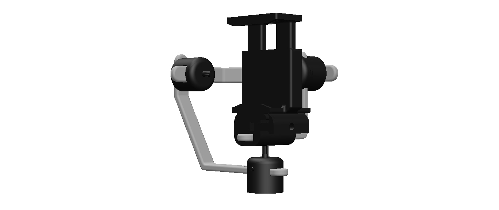
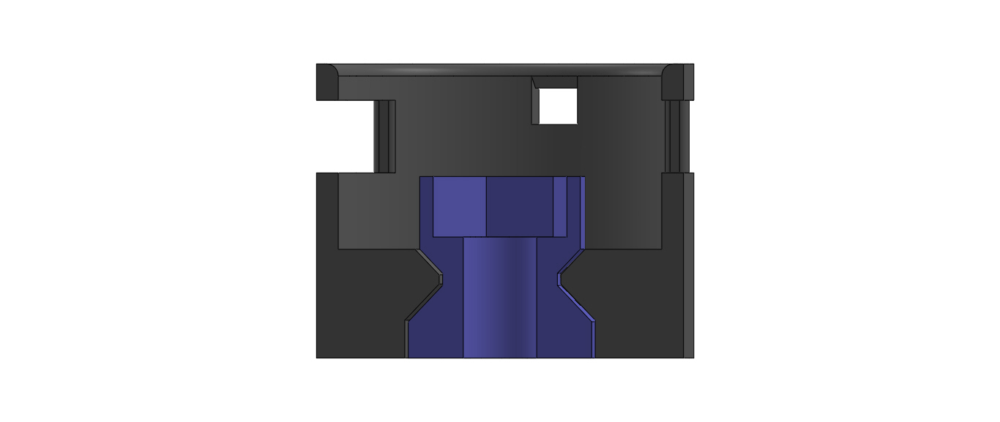
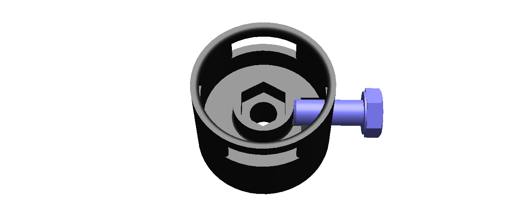
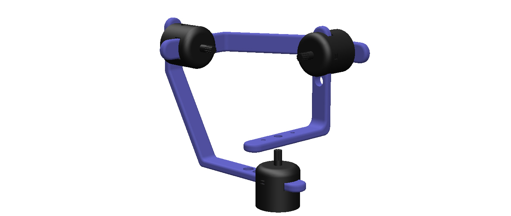
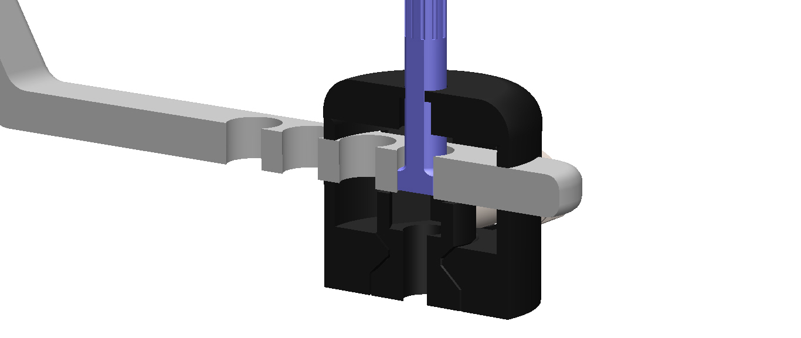

Mechanical Gimbal
Description
A 3D printable phone gimbal is used to capture stable shots with no interference or shaking. This is accomplished using a balanced system that stabilizes the phone in a given orientation. The orientation of the phone can be altered by manipulating the balance of the system. The gimbal is designed to enable rotation on the yaw, pitch, and roll axis. This provides more professional shots when the object or the gimbal has to be in constant motion.
Objective
To design a mechanical phone gimbal that operates solely on the balance of the system without using electric motors.
Challanges
- The joint's size.
- Designing a freely rotating joint with the capability of having free angular immobilization.
- Adjusting the arm lengths to achieve an easily balanceable system.
- Capability to modify the arm lengths for stabilizing different objects.
- The joint's size
-
When designing the rotating joint, constraints were surging. Constraints such as the size of the joint would be bulky due to the fixtures required to firmly hold its components together. This issue was resolved by 3D printing the joint as a single part composed of two components. Both components are free to rotate about each other’s axis while being constrained together by an edge.
 - Designing a freely rotating joint with the capability of having free angular immobilization
-
Another difficulty encountered was that the joint should be immobilized at any angle assigned by the user. This was accomplished by having a screw pierce a TPU cylindrical cover that skirts the inner component of the joint. This connects the free to rotate component to the immobile component, thus immobilizing the joint completely.
 - Adjusting the arm lengths to provide an easily balanceable system
-
For the gimbal to be functional, the balance should be on point. With that being said, the arms' lengths play a vital role in accomplishing such a task. For the system to be balanced, the centers of the 3 joints have to converge. Therefore, the arm lengths were engineered to fulfill the prior requirement.
 - Capability to modify the arm lengths for stabilizing different objects
-
Moreover, to ensure a wide range of applicability for the gimbal, the arm lengths were designed to be adjustable. This is done using a spring mechanism that allows the user to alter the length of each arm to fit the desired application.

Main Components
| Name | Function |
|---|---|
| Rotating joint | Allows free rotation of the gimbal around all 3 axes. |
| Joint cover | Allow access to joint lubrication and contains the spring mechanism |
| Three connecting arms | Provide the extension and balance of the system |
| Holder attachment | Fit the different kinds of phone holders using a clamping mechanism |
| Phone holder | Fix the phone to the holder attachment |